State of GeoForAll
OSGeo global education and research outreach
Helena Mitasova, Vaclav Petras, Anna Petrasova
NCSU
GeoForAll Lab
at
Center for Geospatial Analytics
with contributions by GeoForAll community
Who we are
Global network of academic research and education laboratories and government/industry partners

What is our mission
Making geospatial education and opportunities accessible to all

What are our goals
- Create research and teaching opportunities in open geospatial science
- Build global open access teaching and research infrastructure
- Establish collaborations between academia, government and industry around
open geospatial science and education
How it started
Founded in 2011: MoU between OSGeo and the International Cartographic Association (ICA)

Georg Gartner and Arnulf Christl, renewal in 2015 with Jeff McKenna
More MoUs
International Society for Photogrammetry and Remote Sensing (ISPRS) signed in 2014.
University Consortium for GIScience (UCGIS) signed in 2016
Association of Geographic Information Laboratories in Europe (AGILE) signed in 2017

Map of the labs 2012
12 labs in 2012

Map of the labs 2017
over 100 labs globaly in 2017

Organization
Global chair: Suchith Anand
- regional chairs: contact persons for
Africa, Asia - Australia, Europe, Iberoamerica, North America
- advisory board: OSGeo, ICA, ISPRS presidents,
and academic leaders
- 100+ OSGeo GeoForAll lab directors


Education initiatives
- open access educational material based on free and open source geospatial software and data
- free and open source curricula, courses, and workshops
- OSGeo Educational Content Inventory
- Teaching areas for some labs are listed on wiki - add yours https://wiki.osgeo.org/wiki/ICA_OSGeo_Lab_Teaching_areas
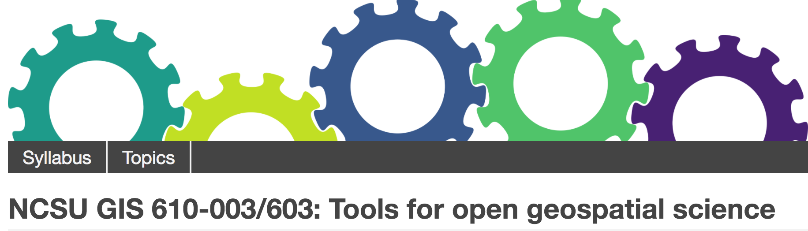
Education initiatives
- teacher training and school education interest group: Elzbieta Woloszynska-Wisnievska, Adrian Manning
- UN initiative https://wiki.osgeo.org/wiki/UnitedNations_Committee
- open source GIS certificate U Colorado Denver
- GeoAcademy, open access on-line courses
fossgeo.org: 10000+ learners enrolled in 4 years

Research
- research projects developing methods, algorithms and tools
for open geospatial science and applications
- development and contributions to open geospatial software, data
- organizing and participating in community sprints
 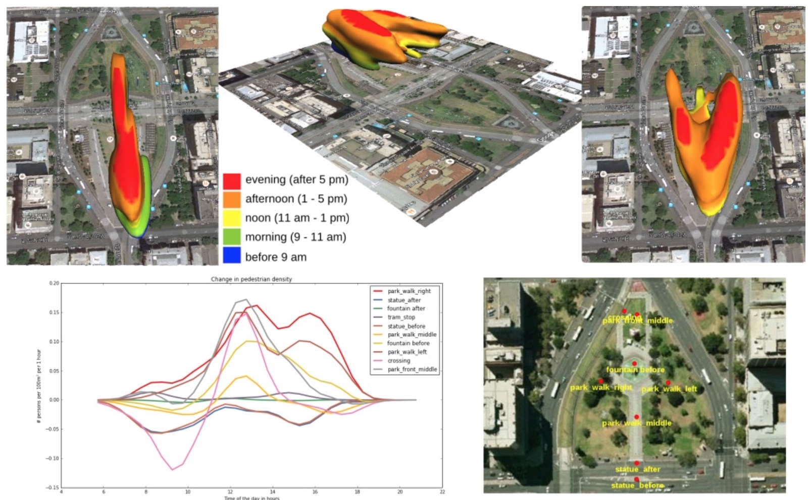
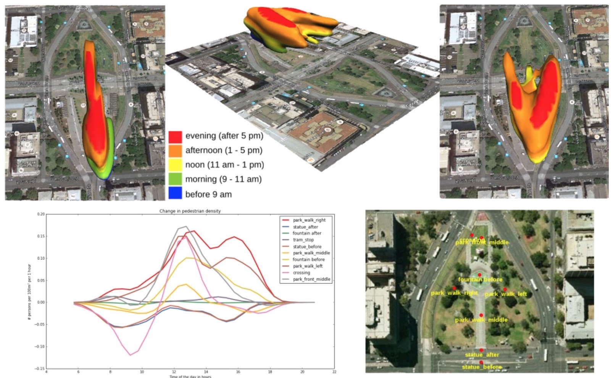
Research Interest Groups
- Urban Science - City Analytics:Chris Petit, Patric Hogan
- AgriGIS: Didier Leubovici, Nobusuke Iwasaki
- GeoCrowd - VGI, Crowd Sourcing and Citizen Science: M.A Brovelli, P. Mooney
- K-12 education, colaboration with mapstory.org
Mapathon for children lead by Politecnico di Milano and HOT

Where to learn more about
Website
Past, still available:

some information obsolete, won't be maintained
Website
New website, redesigned and integrated with OSGeo:
osgeo.org/initiatives/geo-for-all
Join Code sprint on Saturday to add your lab and help out https://wiki.osgeo.org/wiki/FOSS4G_2017_Code_Sprint#Website_Training
Member webpages
- Each lab gets a webpage by filling-in a form
- 25 submitted so far (out of 118 registered on wiki)

Newsletter
- chief editor Nikos Lambrinos,
Aristotle Univ. of Thessaloniki, Greece - editorial team for regions of the world
- Lab of the month
- Geoambassador of the month

http://www.geoforall.org/newsletters/
Newsletter
- monthly highlights of activities
- events, conferences, webinars, courses, workshops
- funding, scholarships, exchange programs
- ideas, social contributions
http://www.geoforall.org/newsletters/
Webinars
- 8 webinars since summer 2016
- selected webinars joint with UCGIS and ASPRS CaGIS
- Interested to present? Contact Rafael.Moreno@ucdenver.edu

http://www.geoforall.org/webinars/ YouTube channel
Conferences
- academic contributions at regional and global FOSS4G
- open geospatial sessions at major scientific and technology conferences (ISPRS, ICC, AGU, EGU, ...)
- best student paper awards by OSGeo, ICA, ISPRS

 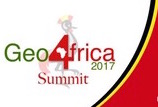
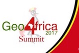
15+ regional FOSS4G / OGRS conferences FOSS4G BE, Brussels September 22, 2016 FOSS4G Romania, October 7-8, 2016 FOSS4G Hungary, November 25, 2016 FOSS4G Asia, January 26-29, 2017 GFOSS Italy, February 8-11 FOSGIS Germany, March 22-25 FOSS4G SE USA (Knoxville, TN) May 19 FOSS4G Finland, May 23 OSGeo Irish Local chapter symposium, May 26 SIG Libre Spain June 1,2 FOSS4GNL Groningen NL, June 28 FOSS4G-JP Hokkaido - June 30 OSGeo Africa June 28 - July 1 FOSS4G Europe July 18 - 22 QGIS conference August 2-10
Publications
- Special topics, open access journal issues
- FOSS4G academic sessions proceedings,
new in 2017 - OSGeo Journal published through UMass library system http://scholarworks.umass.edu/foss4g/ - On-line publications
- Books
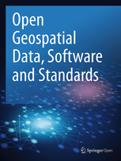
 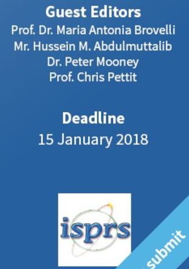
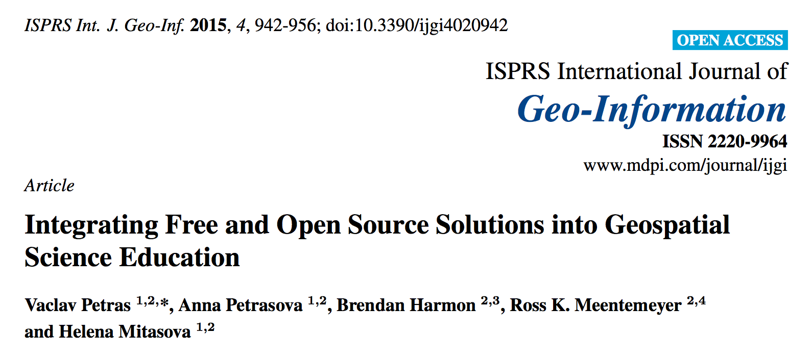
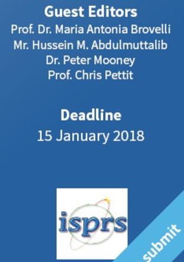
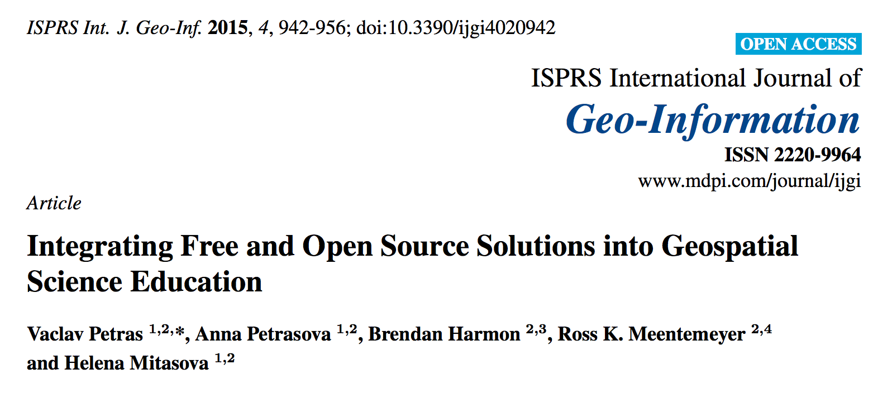
NASA World-Wind Europa challenge
Challenge open to worldwide participants: develop application for sustainable smart cities that uses NASA's WebWorldWind.http://eurochallenge.como.polimi.it/
2016 final in Trento, Italy; 2017 final in Helsinki, Finland


2015 and 2016 winner: Trillium Learning, Kodiak Island Borough School District, Alaska
Google Summer of Code
- OSGeo serves as umbrella organization for OSGeo and guest projects
- 15 students accepted in 2017
- contributing to GRASS GIS, QGIS, gvSIG, pgRouting,
NASA WWW and OSM, istSOS, MapMint4ME
How to participate in GeoForAll
Three types of participation:
- members of the global network: academic labs
- partners from industry/government/nonprofit partner
- MoU for international professional organizations
How to join
http://www.geoforall.org/how_to_join/
http://osgeo.org/initiatives/geo-for-all/how-to-join-geo-for-all/
- read the criteria
- if you fulfill the criteria, contact regional chair by email, describe your open source geospatial activities
- if invited:
- register at OSGeo wiki
- create entry for your lab in the wiki table
- list your research and education interests
- join the mailing list
- participate
How to become a partner
http://www.geoforall.org/how_to_join/
- read the criteria for the labs
- contact a regional chair, describe your interests in partnering with geo for all labs
- if invited:
- register at OSGeo wiki
- create entry for your organization in the wiki table
- join the mailing list
- list your research and edu interests
- participate
Where to find member labs
Wiki http://wiki.osgeo.org/wiki/Edu_current_initiatives
- member table with links to labs
- education and research topics
- will be maintained to keep track of invited labs
Where to find member labs
New Website http://osgeo.org/geo-for-all-labs/
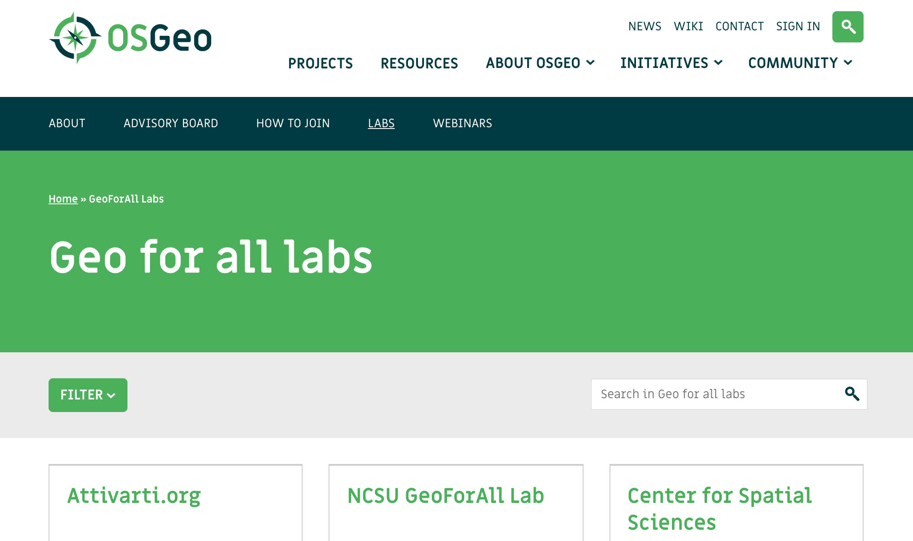
Examples of GeoForAll Labs activities and collaborations
Presentation by Maria Antonia Brovelli for UN Initiative
20+ lab highlights
https://www.slideshare.net/mariabrovelli/geoforall-a-successful-osgeo-initiative
Lab of the month series in the Newsletter
Questions?
New interactiveGeoForAll Labs map
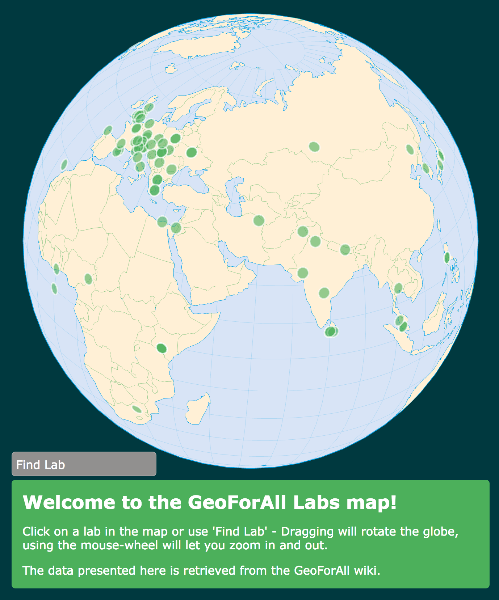

Thank you Barend Köbben, ITC-University of Twente